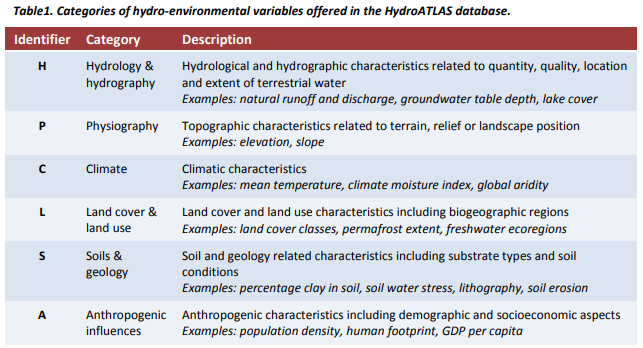
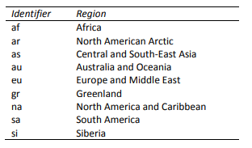
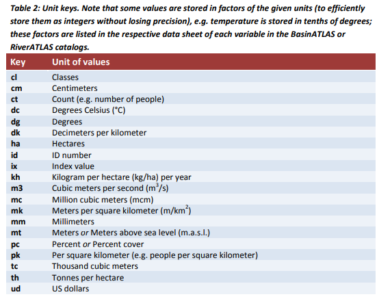
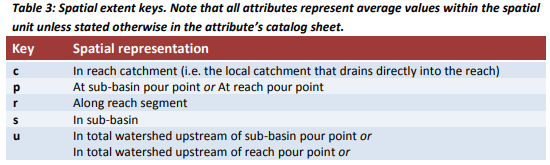
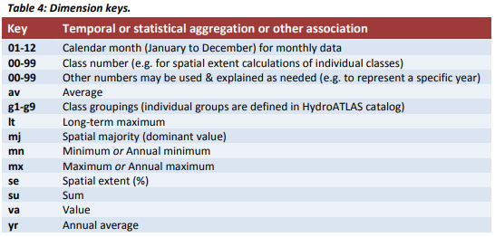

Technical Documentation Version 1.0
Background and introduction
The goal of HydroATLAS is to provide a broad user community with a standardized compendium of hydro-environmental attribute information for all watersheds and rivers of the world at high spatial resolution. Version 1.0 of HydroATLAS offers data for 56 variables, partitioned into 281 individual attributes and organized in six categories: hydrology; physiography; climate; land cover & use; soils & geology; and anthropogenic influences (Table 1 and Appendix 1). HydroATLAS derives the hydro-environmental attributes by reformatting original data from well-established 2 global digital maps. The attributes are then linked to hierarchically nested sub-basins at multiple scales, as well as to individual river reaches, both extracted from the global HydroSHEDS database at 15 arc-second (~500 m) resolution. The sub-basin and river reach information is offered in two companion datasets: BasinATLAS and RiverATLAS. The standardized format of HydroATLAS ensures easy applicability while the inherent topological information supports basic network functionality such as identifying up- and downstream connections. HydroATLAS is fully compatible with other products of the overarching HydroSHEDS project enabling versatile hydro-ecological assessments. Updates of HydroATLAS are envisioned as new data become available. The HydroATLAS documentation is organized in two parts: Part 1 (this document) provides an overview of the database and general explanations. Part 2 is provided in two alternative files: ‘BasinATLAS_Catalog’ or ‘RiverATLAS_Catalog.’ Each catalog file first provides a summary table listing all hydro-environmental variables and their basic characteristics. This is followed by detailed information on each individual variable, including source data descriptions, units, conversion methodology, and citations. Each variable is presented on one standardized sheet which includes a map at global extent indicating the spatial distribution of values of the respective variable. Note that the summary table and information sheets are hyperlinked within each catalog. The development of HydroATLAS is fully described in Linke et al. (2019). For data citations and acknowledgements see section 4.4 below. General citations of HydroATLAS should refer to:
Linke, S., Lehner, B., Ouellet Dallaire, C., Ariwi, J., Grill, G., Anand, M., Beames, P., Burchard-Levine, V., Maxwell, S., Moidu, H., Tan, F., Thieme, M. (2019). Global hydro-environmental sub-basin and river reach characteristics at high spatial resolution. Scientific Data 6: 283. DOI: 10.1038/s41597-019-0300-6.

Methods and data characteristics
The methods used to create HydroATLAS are fully described in Linke et al. (2019). All spatial units of HydroATLAS, i.e. either sub-basin polygons or river reach lines, were extracted from World Wildlife Fund’s HydroSHEDS database (Lehner et al. 2008; Lehner and Grill 2013) at a grid resolution of 15 arc-seconds (approx. 500 m at the equator). For more information please refer to the Technical Documentation of HydroSHEDS at . HydroATLAS consists of two complementary parts: BasinATLAS and RiverATLAS. BasinATLAS provides hydro-environmental attributes for sub-basins (polygons). RiverATLAS provides hydro-environmental attributes for stream and river reaches (line segments). Basin and sub-basin delineations have been pre-processed as a derivative of HydroSHEDS at 15 arc-second resolution and are available as a stand-alone product termed HydroBASINS (for details see ). The HydroBASINS dataset offers a suite of 12 layers, each containing nested sub-basins that were subdivided and coded using the topological concept of the Pfafstetter system, which provides a methodology for the breakdown of sub-basins at different scales in a hierarchical and systematic manner (Figure 1a). It should be noted, however,that at the lowest Pfafstetter levels (i.e. 1-3) multiple river basins may be lumped into larger regions, and for coastal sub-basins (at any level) multiple smaller rivers may be lumped into one sub-basin—in these cases, the association of some particular attributes (such as river discharge) is ambiguous and the assigned attribute value may refer to only one river within the sub-basin unit. Also, a global river network delineation has been extracted from HydroSHEDS at 15 arc-second resolution and is available as a stand-alone product termed HydroRIVERS (for details see ). For this network, rivers have been defined to start at all pixels where the accumulated upstream catchment area exceeds 10 km2, or where the long-term average natural discharge exceeds 0.1 cubic meters per second, resulting in a line network consisting of individual stream and river reaches (Figure 1b).
Figure 1: Overview of Pfafstetter sub-basin coding scheme used in BasinATLAS (a); and river reach concept used in RiverATLAS (b). Sub-basins are nested within 12 hierarchical levels. A river reach is defined as a stretch between two tributaries, or between the start/end of the network and a tributary.
It should be noted that the quality of HydroSHEDS data is significantly inferior for regions above 60 degrees northern latitude as there are no underlying SRTM elevation data available and thus a coarser scale DEM has been inserted (HYDRO1k provided by USGS).
Data format and distribution
a) Data format and projection
HydroATLAS is publicly available for download at and from the figshare data repository at. All map data layers, including attribute tables, are provided in ESRI© Geodatabase and Shapefile formats. The data are projected in a Geographic Coordinate System using the World Geodetic System 1984 (GCS_WGS_1984). The attribute table can also be accessed as a stand-alone file in dBASE format which is included in the Shapefile format. HydroATLAS data are available electronically in compressed zip file format. To use the data files, the zip files must first be decompressed. Each zip file includes a copy of the HydroATLAS Technical Documentation.
b) Layer name syntax and spatial coverage
HydroATLAS data layers are provided in two spatial extents:
- primarily as a seamless, fully global coverages;
- but for some datasets also (or only) as regional tiles (see Figure 2 for definition of regions).
The layer names follow the syntax:
- BasinATLAS_v10_levXX (for BasinATLAS layers with global coverage), where XX indicates the Pfafstetter level (1-12);
- RiverATLAS_v10 (for RiverATLAS layer with global coverage); or
- RiverATLAS_v10_YY (for RiverATLAS layers in regional tiles), where YY indicates the region.
The regional extents are defined by a two-digit identifier:

Note that the Shapefile format is limited to a maximum file size of 2 GB; therefore the RiverATLAS data in Shapefile format are only provided in regional tiles (with further subdivisions into north and south parts where needed). Currently, all other data layers are provided in full global coverage,but more versatile regional breakdowns and data packages may be offered in future iterations.
Figure 2: Spatial extent of regional tiles of HydroATLAS layers.
c) Available columns and column name syntax
The attribute tables of HydroATLAS contain the pre-existing columns of HydroBASINS and HydroRIVERS, respectively (see their Technical Documentations at for details). The hydro-environmental attributes are then appended in a series of additional columns. This section provides information on the column name syntax used for the identification of each sub-basin or river reach attribute provided in the HydroATLAS database. All existing attributes and their associated column names are summarized in Appendix 1 and at the beginning of the BasinATLAS and RiverATLAS catalogs.
Each hydro-environmental attribute column name has 10 digits (for example ‘dis_m3_syr’) and its syntax is as follows:
<Layer name key>_<Unit key>_<Spatial key>< Dimension key>Layer name key:
Three digits that describe the name of the attribute. The layer name key is unique to the
attribute it represents. Example: ‘dis’ for discharge.
Unit key:
Two digits that describe the units of the attribute value. See Table 2 for possible keys.

Spatial extent key:
One digit that describes the spatial extent of the attribute. See Table 3 for possible keys.

Dimension key:
Two digits that describe the dimension of the attribute in terms of its aggregation level or other
type of spatio-temporal association. The dimension key can refer to a temporal dimension, a
statistical aggregation, or a class or year association. See Table 4 for possible keys.

License, disclaimer and acknowledgement
License agreement
HydroATLAS forms a Collective Database, i.e. a collection of information from independent datasets, and as a whole is licensed under a Creative Commons Attribution 4.0 International License (CC-BY 4.0; http://creativecommons.org/licenses/by/4.0/). However, the individual parts (content) of this Collective Database are still governed by their own licenses. In version 1.0 of HydroATLAS, all attribute columns are licensed under either a Creative Commons Attribution 4.0 International License (CC-BY 4.0) or an Open Data Commons Open Database License (ODbL 1.0; https://opendatacommons.org/licenses/odbl/1-0/index.html), both permitting reuse of the data for any purpose including commercial. In cases where original licenses differ from CC-BY 4.0 or ODbL 1.0, special permission was obtained from the original author(s) to release their works in the format of HydroATLAS under a CC-BY 4.0 or ODbL 1.0 license. Note that the licenses of the underpinning source datasets in their original format are not affected or altered by these licenses. Detailed information regarding the specific license that applies to each attribute column is provided in the respective data sheet of the BasinATLAS and RiverATLAS catalogs. By downloading and using the data the user agrees to the terms and conditions of these licenses.
Disclaimer of warranty
The HydroATLAS database and any related materials contained therein are provided “as is” without warranty of any kind, either express or implied, including, but not limited to, the implied warranties of merchantability, fitness for a particular purpose, noninterference, system integration, or noninfringement. The entire risk of use of the data shall be with the user. The user expressly acknowledges that the data may contain some nonconformities, defects, or errors. The authors do not warrant that the data will meet the user’s needs or expectations, that the use of the data will be uninterrupted, or that all nonconformities, defects, or errors can or will be corrected. The authors are not inviting reliance on these data, and the user should always verify actual data.
Limitation of liability
In no event shall the authors be liable for costs of procurement of substitute goods or services, lost profits, lost sales or business expenditures, investments, or commitments in connection with any business, loss of any goodwill, or for any direct, indirect, special, incidental, exemplary, or consequential damages arising out of the use of the HydroATLAS database and any related materials, however caused, on any theory of liability, and whether or not the authors have been advised of the possibility of such damage. These limitations shall apply notwithstanding any failure of essential purpose of any exclusive remedy.
Data citations and acknowledgements
When using an attribute contained in HydroATLAS, citations and acknowledgements should be made to both the original data source and the HydroATLAS compendium. For example, the following template illustrates a reference to precipitation data sourced from HydroATLAS:
“Precipitation data from the WorldClim v1.4 database (Hijmans et al. 2005) have been used in the spatial format as provided by HydroATLAS v1.0 (Linke et al. 2019).”
Information regarding the reference(s) for each hydro-environmental attribute is provided on the individual attribute sheets in the BasinATLAS and RiverATLAS catalogs. In addition, every data source may have individual requests for acknowledgements, and users of HydroATLAS are asked to honor those requests when using the respective attributes.
General citations and acknowledgements of HydroATLAS should be made as follows:
Linke, S., Lehner, B., Ouellet Dallaire, C., Ariwi, J., Grill, G., Anand, M., Beames, P., Burchard-Levine, V., Maxwell, S., Moidu, H., Tan, F., Thieme, M. (2019). Global hydro-environmental sub-basin and river reach characteristics at high spatial resolution. Scientific Data 6: 283. DOI: 10.1038/s41597-019-0300-6.<
We kindly ask users to cite both source data and HydroATLAS in any published material produced using the data. If possible, online links to the HydroATLAS website should be provided .
References
- Lehner, B., Grill G. (2013). Global river hydrography and network routing: baseline data and new approaches to study the world’s large river systems. Hydrological Processes 27(15): 2171-2186.
- Lehner, B., Verdin, K., Jarvis, A. (2008). New global hydrography derived from spaceborne elevation data. Eos, Transactions, AGU 89(10): 93-94.
- Linke, S., Lehner, B., Ouellet Dallaire, C., Ariwi, J., Grill, G., Anand, M., Beames, P., Burchard-Levine, V., Maxwell, S., Moidu, H., Tan, F., Thieme, M. (2019). Global hydro-environmental sub-basin and river reach characteristics at high spatial resolution. Scientific Data 6: 283. DOI:[10.1038/s41597-019-0300-6](https://doi.org/10.1038/s41597-019-0300-6)
Appendix 1: Attributes included in version 1.0 of HydroATLAS (for details see HydroATLAS catalogs)
ID | Category | Variable | Source Data | Citation | Column(s) | Count |
H01 | Hydrology | Natural Discharge | WaterGAP v2.2 | Döll et al. 2003 | dis_m3_--- | x3 |
H02 | Hydrology | Land Surface Runoff | WaterGAP v2.2 | Döll et al. 2003 | run_mm_--- | x1 |
H03 | Hydrology | Inundation Extent | GIEMS-D15 | Fluet-Chouinard et al. 2015 | inu_pc_--- | x6 |
H04 | Hydrology | Limnicity (Percent Lake Area) | HydroLAKES | Messager et al. 2016 | lka_pc_--- | x2 |
H05 | Hydrology | Lake Volume | HydroLAKES | Messager et al. 2016 | lkv_mc_--- | x1 |
H06 | Hydrology | Reservoir Volume | GRanD v1.1 | Lehner et al. 2011 | rev_mc_--- | x1 |
H07 | Hydrology | Degree of Regulation | HydroSHEDS & GRanD | Lehner et al. 2011 | dor_pc_--- | x1 |
H08 | Hydrology | River Area | HydroSHEDS & WaterGAP | Lehner & Grill 2013 | ria_ha_--- | x2 |
H09 | Hydrology | River Volume | HydroSHEDS & WaterGAP | Lehner & Grill 2013 | riv_tc_--- | x2 |
H10 | Hydrology | Groundwater Table Depth | Global Groundwater Map | Fan et al. 2013 | gwt_cm_--- | x1 |
P01 | Physiography | Elevation | EarthEnv-DEM90 | Robinson et al. 2014 | ele_mt_--- | x4 |
P02 | Physiography | Terrain Slope | EarthEnv-DEM90 | Robinson et al. 2014 | slp_dg_--- | x2 |
P03 | Physiography | Stream Gradient | EarthEnv-DEM90 | Robinson et al. 2014 | sgr_dk_--- | x1 |
C01 | Climate | Climate Zones | GEnS | Metzger et al. 2013 | clz_cl_--- | x1 |
C02 | Climate | Climate Strata | GEnS | Metzger et al. 2013 | cls_cl_--- | x1 |
C03 | Climate | Air Temperature | WorldClim v1.4 | Hijmans et al. 2005 | tmp_dc_--- | x16 |
C04 | Climate | Precipitation | WorldClim v1.4 | Hijmans et al. 2005 | pre_mm_--- | x14 |
C05 | Climate | Potential Evapotranspiration | Global-PET | Zomer et al. 2008 | pet_mm_--- | x14 |
C06 | Climate | Actual Evapotranspiration | Global Soil-Water Balance | Trabucco & Zomer 2010 | aet_mm_--- | x14 |
C07 | Climate | Global Aridity Index | Global Aridity Index | Zomer et al. 2008 | ari_ix_--- | x2 |
C08 | Climate | Climate Moisture Index | WorldClim & Global-PET | Hijmans et al. 2005 | cmi_ix_--- | x14 |
C09 | Climate | Snow Cover Extent | MODIS/Aqua | Hall & Riggs 2016 | snw_pc_--- | x15 |
L01 | Landcover | Land Cover Classes | GLC2000 | Bartholomé & Belward 2005 | glc_cl_--- | x1 |
L02 | Landcover | Land Cover Extent | GLC2000 | Bartholomé & Belward 2005 | glc_pc_--- | x44 |
L03 | Landcover | Potential Natural Vegetation Classes | EarthStat | Ramankutty & Foley 1999 | pnv_cl_--- | x1 |
L04 | Landcover | Potential Natural Vegetation Extent | EarthStat | Ramankutty & Foley 1999 | pnv_pc_--- | x30 |
L05 | Landcover | Wetland Classes | GLWD | Lehner & Döll 2004 | wet_cl_--- | x1 |
L06 | Landcover | Wetland Extent | GLWD | Lehner & Döll 2004 | wet_pc_--- | x22 |
L07 | Landcover | Forest Cover Extent | GLC2000 | Bartholomé & Belward 2005 | for_pc_--- | x2 |
L08 | Landcover | Cropland Extent | EarthStat | Ramankutty et al. 2008 | crp_pc_--- | x2 |
L09 | Landcover | Pasture Extent | EarthStat | Ramankutty et al. 2008 | pst_pc_--- | x2 |
L10 | Landcover | Irrigated Area Extent (Equipped) | HID v1.0 | Siebert et al. 2015 | ire_pc_--- | x2 |
L11 | Landcover | Glacier Extent | GLIMS | GLIMS & NSIDC 2012 | gla_pc_--- | x2 |
L12 | Landcover | Permafrost Extent | PZI | Gruber 2012 | prm_pc_--- | x2 |
L13 | Landcover | Protected Area Extent | WDPA | IUCN & UNEP-WCMC 2014 | pac_pc_--- | x2 |
L14 | Landcover | Terrestrial Biomes | TEOW | Dinerstein et al. 2017 | tbi_cl_--- | x1 |
L15 | Landcover | Terrestrial Ecoregions | TEOW | Dinerstein et al. 2017 | tec_cl_--- | x1 |
L16 | Landcover | Freshwater Major Habitat Types | FEOW | Abell et al. 2008 | fmh_cl_--- | x1 |
L17 | Landcover | Freshwater Ecoregions | FEOW | Abell et al. 2008 | fec_cl_--- | x1 |
S01 | Soils & Geology | Clay Fraction in Soil | SoilGrids1km | Hengl et al. 2014 | cly_pc_--- | x2 |
S02 | Soils & Geology | Silt Fraction in Soil | SoilGrids1km | Hengl et al. 2014 | slt_pc_--- | x2 |
S03 | Soils & Geology | Sand Fraction in Soil | SoilGrids1km | Hengl et al. 2014 | snd_pc_--- | x2 |
S04 | Soils & Geology | Organic Carbon Content in Soil | SoilGrids1km | Hengl et al. 2014 | soc_th_--- | x2 |
S05 | Soils & Geology | Soil Water Content | Global Soil-Water Balance | Trabucco & Zomer 2010 | swc_pc_--- | x14 |
S06 | Soils & Geology | Lithological Classes | GLiM | Hartmann & Moosdorf 2012 | lit_cl_--- | x1 |
S07 | Soils & Geology | Karst Area Extent | Rock Outcrops v3.0 | Williams & Ford 2006 | kar_pc_--- | x2 |
S08 | Soils & Geology | Soil Erosion | GloSEM v1.2 | Borrelli et al. 2017 | ero_kh_--- | x2 |
A01 | Anthropogenic | Population Count | GPW v4 | CIESIN 2016 | pop_ct_--- | x2 |
A02 | Anthropogenic | Population Density | GPW v4 | CIESIN 2016 | ppd_pk_--- | x2 |
A03 | Anthropogenic | Urban Extent | GHS S-MOD v1.0 (2016) | Pesaresi & Freire 2016 | urb_pc_--- | x2 |
A04 | Anthropogenic | Nighttime Lights | Nighttime Lights v4 | Doll 2008 | nli_ix_--- | x2 |
A05 | Anthropogenic | Road Density | GRIP v4 | Meijer et al. 2018 | rdd_mk_--- | x2 |
A06 | Anthropogenic | Human Footprint | Human Footprint v2 | Venter et al. 2016 | hft_ix_--- | x4 |
A07 | Anthropogenic | Global Administrative Areas | GADM v2.0 | University of Berkeley 2012 | gad_id_--- | x1 |
A08 | Anthropogenic | Gross Domestic Product | GDP PPP v2 | Kummu et al. 2018 | gdp_ud_--- | x3 |
A09 | Anthropogenic | Human Development Index | HDI v2 | Kummu et al. 2018 | hdi_ix_--- | x1 |